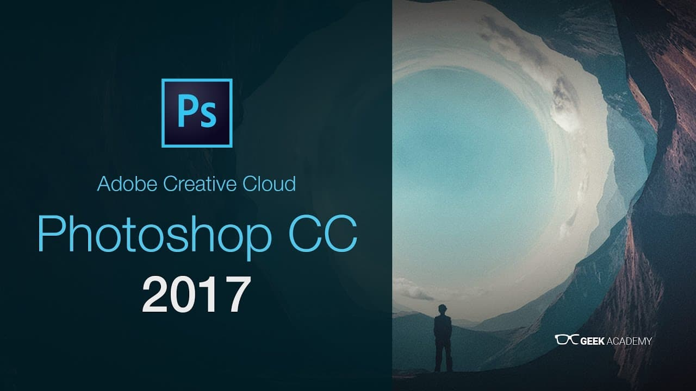

У нас можно скачать Adobe Photoshop CC 2017 и пользоваться им на протяжении бесконечного времени, последняя из версий CC которая устанавливается и активируется без танцев с бубном! В статье вы узнаете много нового об установке программы, и о том, как продолжить её использовать после истечения указанного пробного периода, а то и вовсе отключить пробный период.

На данный момент данная версия считается лучшим выбором так как это официальная версия, и к тому же установка без проблемная, не нужно вводить Adobe ID и прочего.
Внимательно отнеситесь к инструкции установки во избежание проблем. Фотошоп является одной из самых популярных программ, именно он задает стандарты в этой области. Множество функций в Adobe Photoshop, которые делают возможной любую операцию над фотографией.
Профессионалы рекомендуют Фотошоп 2017:
Решили попробовать самую легкую в установке версию редактора Photoshop 2017, инструкция установки поможет в этом вам. Ввиду того что длительность официальной лицензии длится всего лишь 30 дней придется прибегнуть к альтернативному способу активации программы. Постараемся как можно проще и быстрее объяснить шаги, которые необходимо выполнить для получения приложения бесплатно. Интеграция доступа в мобильных устройствах к функционалу Photoshop, основанная на специально разработанных приложениях, делает Фотошоп серии CC универсальным инструментарием для работы с файлами изображений.
{kind=link}
Графический Редактор Photoshop 2017 на русском:
Основное предназначение данного пакета – работа с фото и видеоматериалами. Программы открывают доступ к высокому уровню производительности и предоставляют возможность для ускорения монтажа и производства видео, поддерживают архитектуру 64-разрядного типа. Имеется большой ассортимент инструментов для работы с цифровыми материалами: анимацией, графикой, визуальными эффектами.
Редактор Photoshop CC это новый совершенный продукт который компания Adobe выпустила в свет в середине 2014 года, многих эта новость порадовала, а вот с обладателями Windows xp придется пользоваться предыдущими версиями.
Фотошоп СС — это улучшенная и оптимизированная для пользователей программа, с помощью которой возможно как отредактировать уже имеющиеся изображения в растровом формате, так и создавать новые. Пакет выпускается в нескольких версиях, главное различие между которыми заключается в наборе программ и их предназначении. Он содержит в себе массу полезных программ, среди которых: InDesign, Premiere, Photoshop, Illustration, Encore, Flash Builder и многие другие. Большая часть программного обеспечения предназначена для обработки видео и фото, графического дизайна, веб-разработок и прочего.
Недаром программа – лидер среди аналогов, ее используют как профессионалы, так и любители. Данный графический редактор среди множества предлагаемых функций позволяет работать на уровне послойной корректировки изображения, а также использовать контуры. Вы можете оформить любое точечное изображение по своему желанию, сделать его совершенным. Кроме того, улучшен (интерфейс на русском) – пользователю не составит труда разобраться в предлагаемом меню и настройках.
Все версии СС начиная с 2015г предназначены только для OS Windows 7 и выше, самая стабильная и популярная предыдущая версия это Adobe Photoshop CS6 скачать можно по ссылке, CS6 менее требователен к ресурсам системы.
Photoshop CC 2017 имеет хорошее сочетание актуальности и системных требований, по этому она у нас стоит лучшим выбором пользователей. Чем новее версия Фотошопа тем больше ее вес, а так же не обходится и в прекращении поддержки новыми версиями старых OS, минимальная версия os windows 7.
1) Инструкция по установке Photoshop 2017 (подробная инструкция).
2) Как активировать Фотошоп 2017 (подробная инструкция).
Скачать Adobe Photoshop 2017:
- Данная версия работает на Windows 7 — Windows 10 и выше.
- Ничего не вырезано и не перекодировано (официальная версия).
Скачать бесплатно Фотошоп 2017 x64
Размер файла: 888 Мбcкачать .torrent файл ↓
Размер файла: 888 мб
Скачать бесплатно Фотошоп 2017 x32
Размер файла: 766 Мбcкачать .torrent файл ↓
Размер файла: 766 мб
По возможности взгляните на инструкцию, возможно вы не опытный владелец ПК или у вас возникли сложности в установке! Активируйте программу перенеся файл из архива ниже.
| Файл Amtlib.dll для CC 2017 x32 | Файл Amtlib.dll для CC 2017 x64 |
 |
 |
Вы так же можете скачать уже пролеченные версии Фотошоп CC 2017, за установку заведомо взломанных приложений вы берете ответственность полностью на себя. Как правило такие версии раздаются исключительно торрентами а так же часто на них ругаются антивирусы. Мы же рекомендуем официальную версию!
Еще варианты загрузок:
Если вам понравился контент на странице поделитесь им в соц. сетях.
Вы — БОГИ!
Блин! Огромное вам спасибо!!! Что я бы делал если бы не вы!!!
Бесплатная версия лишь на 7 дней дается. Так и должно быть?
активируйте по инструкции
что делать, если высвечивается «это старая версия, скачайте более новую»?
Данная ошибка могла быть только в том случае если у вас не выключился интернет, чтоб установка продолжилась, выключите интернет в ручную и повторите установку!
Огромное спасибо! Все получилось!!!
Показано и рассказано быстро и понятно.
Разобралась.Спасибо)))
отлично
Замечательный фотошоп
+Админ можно скачать на Вин 8
да
А на ДЕСЯТУЮ ВИНДУ этот фотошоп пойдет?
да пойдет
Все просто чудесно. С Новым Годом, друзья, с Новым Годом!
с новым счастьем))
Я хочу
НА телефон
На телефон можно скачать из плеймаркета
Виндус сойдет?
да
Раскрыть архив комментариев (вопросы-ответы)
Его можно скачать на планшет MegaFon Login?
Нет не пойдет
нет не получится
а теперь и вовсе не открывает документы Raw(((
Скачала установила очень обрадовалась. Скачивала из-за обновлений версии, меня интересовало: фильтр Portraiture, стабилизация резкости и фильтр Camera Raw. фильтр Camera Raw был, но при последующем запуске пропал, почему? а плагин Portraiture оказалось устанавливать нужно отдельно, скачала установила, но фотошоп его не видит… очень жаль…. что посоветуете?спасибо за ответ
когда я скачиваю при помощи Creative Cloud,на рабочем столе выходит белый документ просто без иконки и когда я кликаю на него компьютер выдает что не может открыть этот файл т.к. нет программы с помощью которого открыть этот файл,что делать теперь?
Админушка, спасибо и дай Бог здоровья!
Качнул на официальном сайте Photoshop СС, потом крякнул по вашей инструкции, вроде работает пока! Creativе Cloud мне не удалось снести, думал не сложится, но пронесло кажись. И это радует! Огромная благодарность Вам! У меня стоит 8-ка, но периодически выскакивает предложение установить 8.1, проблем не возникнет у меня после обновления потом с Фотошопиком?
нет не должно!
Админ етот файл хочет от мня парол,Что написат?
Какой еще пароль?? где просит?
почему мне пишут что файл не безопасен?!
КТО ПИШЕТ?
Наверное SmartScreen
скорее всего
под MAC есть сборка? или эта пойдет??
xacu skacat etu proqrom kak delat a ne znayu
Я качаю с Creative Cloud, Windows 8.1 И у меня долго качается, почему? я все программы закрыл, инет быстрый! И я хочу узнать, без вирусов ли? а то у меня уже начинает тупить комп!
после скачивания выдает ошибку. Пишет, что не удалось извлечь загруженные файлы, при повторе ничего не меняется. как можно исправить это, подскажите пожалуйста???
Официальную версию скачивали с помощью Creative Cloud?
да
Может памяти не хватает, проблема либо в компьютере либо в самом приложении от adobe в случае ели в приложении то нужно обращаться к ним в поддержку. Попробуйте другую версию скачать например Cs6
OK
Привет ребят.Фотошоп для профессионалов Я им пользуюсь!;D
Одни положительные отзывы настораживают… Что-то тут нечисто…
класс
Класс, работает
aaa
Как скачать фотошоп подскажи!
Я довольна, спасибо разработчикам.
Лучшая для профессионалов и не совсем
все круто первый раз качаю друг посоветовал
молодец
Советуйте другим
замечательно, работает на 5+
у меня тоже
Программа, несомненно, очень стоящая и интересная. В ней есть все, нужны лишь руки и знания. Минус в том, что программа не интуитивная и в ней нужно разбираться, но при определенных знаниях и умениях с фотографиями можно просто творить чудеса. Чтобы качественно в ней разобраться, у меня ушло около целого месяца. Если вы хотите брать эту программу вооружение, то она действительно стоит того
благодарю шеф доволен
я установил потом по инструкции хакнул и все теперь пользуюсь
Когда я начинала пользоваться фотошопом, я и не знала, что меня это так сильно заинтересует. По мне так это самый лучший редактор.С каждой версией фотошоп совершенствуется и становится все более удобнее. Подходит как для профессиональной работы так и для любителей. Приятный интерфейс, удобная работа с инструментами, много интересных функций. Рекомендую!
все четко!!!
спасибо за хороший сервис
Хочу отметить приложение Camera RAW которое работает как фильтр. Обеспечивает практически 100 идентичную работу как в лайтрум. Новый инструмент — функция Upright. Эта фунция автоматически выравнивает горизонт и геометрию снимка, если нужно.
без проблем встала по инструкции
Да это полноценная рабочая версия, причем меньше тормозит машину чем даже Photoshop CS4 в полной комплектации. И версия CC полностью подходит для допечатной подготовки в типографии. Проверяли цветоделение выполняет как на растровом процессоре. Возможно конечно и использование различных фильтров, если в них есть необходимость. И как всегда на высоте работа со слоями и каналами.
я все сделал как написано, ну и все работает а в чем подвох)))
а че привык с подвохом все искать
его нет
Давно искал что-то простое и понятное и наконец нашёл. Во-первых прост в установке. Во вторых удобный и понятный интерфейс. Ну и наконец не только такой «специалист», как я но и обезьяна дрессированная теперь сможет шопить свои фото. И делов то-скачал, установил и пользуйся себе на здоровье и на радость людям. В общем спасибо разработчикам и слава всемогущему интернету.
отлично и без вирусов
аж странно да))
не чего странного, у нас всегда так)
Недавно скачала программу «Фотошоп СС» по приведённой ниже методике через торрент. Не сильно большая, но достаточно интересная программа, которая имеет большое количество функций для редактирования. Удобный интерфейс, разобралась в течении нескольких часов. Не потребовалось даже помощи. Причём программа не тормозит — быстро работает. Редактированные изображения получаются хорошего качества. Мне нравится, в связи с чем и рекомендую.
обновилась!!
Давно уже не обновлял свой фотошоп. Сейчас стоит SC6. И сначала немного затупил с аббревиатурой СС. Погуглил малость и оказалось что офигенная фишка с подпиской. Теперь не надо париться из-за лицензии и вечно искать как взломать. За какие-то 900р. в месяц можно использовать все программы Adobe, и еще в придачу 20 гигов облака дают. По отдельности бы покупать ушло несколько штук баксов
и то верно!
установилось уррррррраа
По мне так это лучшая программка для не только для профессионалов, которые постоянно с графикой работают (себя к таковым не отношу,но отзывы слышала от нескольких), но и для обычного «продвинутого» пользователя. Все управляющие элементы сделаны интуитивно понятно. Лицензионная версия стоит какие-то сумасшедшие деньги, и хорошо, что можно их не тратить
минусов нет как по мне
Отличный фотошоп! Использовал я и предыдущие версии, но в версии «СС» исправлено много ошибок и добавлены новые способности с новыми инструментами. Я считаю, что эта программа лучшая для профессионалов. Здесь есть очень много важных отличий от других программ. Редакция фотографий стоит на высшем уровне: всё удобно и понятно. Обязательно качайте и профессионалы, и новички.
наконец то перса своего разукрашу
давай давай))
Хорошая программа для специалистов по фотографии. Особенно радует, что работает достаточно быстро, создает натуралистические или сюрреалистические изображения из сцен с сверхвысокой контрастностью, технология слияния фотографий позволяет соединять несколько изображений, создавать панорамы без заметных линий стыка, а также поддерживает значительное количество форматов 3D-файлов.
спасибки кулл
Одна из лучших версий программы. Функциональный набор фактически идеален, багов за время работы не обнаружено. Наконец-то модно без проблем создавать комбинации клавиш. Конечно, на самом деле, тут нет нет по-настоящему уникального функционала, но главное все работает как швейцарские часы. Работаю на 32 разрядной Виндовс 7. Рекомендую к загрузке.
как
советую
Одна из лучших программ для редактирования растровых изображений. Пользуюсь очень давно, если руки прямые, то встроенных фильтров и инструментов для редактирования, с головой хватает для любых преобразований картинки. Правда стала более требовательна к железу, ведь прогресс не стоит на месте и нужно же, как то стимулировать покупателей. Хороший вылизанный продукт, который имеет долгую историю.
спасибо, палец вверх!
good chopa
Перед тем, как установить программу, я изучил мнения в инете разных людей. Кто-то жаловался, что она много весит. Кто-то сетовал на ежемесячную плату. Но я для себя сделал вывод, что программа неплохая. Подойдет как чайникам, так и профи. Это хороший редактор растровой графики. Правда, еще нашел существенный минус: почему то убрали предпросмотр фотографий. А так програмка ничего можно работать.
без комментариев))))
Установил на игровой ноутбук Asus. Windows 8.1. Работает без проблем, никаких подвисаний. Очень хорошо проработанный движок. Официальная версия. Простой в использовании, посоветовал другу для изучения фотошопа. Наконец-то добавили поддержку высоких разрешений, хотя пока и в «экспериментальном» режиме.
учусь потихоньку
Доброго времени суток. Скачал себе CC 2014 на ноутбук, так как являюсь администратором сайта и эта программа мне просто необходима. Покупать лицензионные версии дорого, а с пиратскими уже устал но все же. Отличная версия на русском языке, с хорошим интерфейсом а главное-бесплатная. Доволен находкой. Буду пользоваться и вам рекомендую. Не пожалеете.
Тут скачал без проблем.
Если аккуратно следовать инструкции, которую нам предлагает автор проекта, то никаких ошибок по скачиванию не возникнет. Казалось бы, женщинам сложнее справиться с этим, но, как оказалось, мне было легко установить с первой попытки. Безусловно, ни один редактор фотографий не сравнится с PHOTOSHOP. Довольно часто по работе, да и не только, приходится работать с программой и только с помощью ее у меня получаются отличные эскизы.
+5 лайков
большая благодарочка
Отлично! На русском языке и бесплатная версия. Каких-то особых отличий от предыдущих версий, пока, не нашла (но я не очень сильно разбираюсь в этом). Использую просто как любитель и только на стадии освоения. Эта версия достаточно проста для понимания. Но у меня не с первого раза прошла установка (раза два пробовала), после того как перезагрузила- программа установилась.
он на русском?
на странице написано… да
спасибо уже увидел
не верила, скачала и поверила:-)
Загрузила и установила! Пользуюсь и не могу нарадоваться. Идеально подходит для обработки профессиональных фото. Плагины видит, никаких проблем. Работает и на стареньком ноутбуке и на компьютере. А главное — не нужно привыкать и переучиваться, все значки знакомы давно, по прошлым версиям. Удобно, что с каждой новой версией лишь добавляют улучшения, а не меняют полностью программу.
пока все работает надеюсь все так и дальше будет
найдем другой че)))
и то верно))
Всем привет, мне очень понравилась эта программа. Она уникальна своими качествами и обратной стороной. Многие пользуются ей ведь на данный момент мало таких программ который могут помочь людям в создании чего либо. Благодаря этому, фотошоп мне очень помог в создании внутреннего мира. Я желаю чтобы он и дальше пользовался такой привлекательностью.
качайте на win8 работает
+ win7 полет норм
Фотошоп мне очень понравился, он включает в себя множество интереснейших функций. Уже успел отретушировать свои фотографии, что было довольно просто, ведь в таком доступном и лёгком интерфейсе сможет разобраться даже ребёнок. Ещё меня порадовало наличие русского языка. А инструменты, присутствующие в редакторе, позволяют сделать с фотографией всё, что вашей душе угодно.
Я считаю, что редактор заслуживает своей хорошей репутации.
Хорошо, что есть инструкция по установке. Я только начинаю заниматься фотографией, поэтому и обрабатывать пока толком не умею — учусь. Покупать фотошоп пока желания нет, вдруг не будет получаться, а программа все-таки не из дешевых. Установила и пользуюсь именно этой версией, не знаю на счет предыдущих, но эта нравится, интуитивно понятная даже для начинающего пользователя.
Удачи вам!!
дякую процюе
Давно пользуюсь, очень удобная штука. Особенно когда хочешь сделать фото по ярче, текстуры добавить или недостатки на лице замазать или конце в концов коллаж сделать. В фотошопе столько инструментов, что из обычной фотографии можно сделать бомбу. Да и научится этому очень легко. В интернете есть куча видео-уроков. Только в этой версии можно писать текст? Или нужно специально скачивать его как и во всех предыдущих версиях?
на удивление работает)))
ок
Недавно установила себе на компьютер данную программу. Пожалела, что раньше не пользовалась ей. Теперь мои фотографии более яркие, насыщенные! Скачала обучение по фотошопу, чтобы научиться, что еще может эта программа. Теперь потихоньку смотрю. Здорово, что на этом сайте можно скачать эту программу абсолютно бесплатно! На других сайтах, где я была, можно ее было скачать но с проблемами разного рода.
я сюда в этот раз зашел а так на руторе обычно качаю
во блин работает
ну да
Постоянно пользуюсь фотошопом. Скачал и установил и эту версию. Спасибо, что выложили. Хороша программка и с кряком никаких проблем, всё легко и просто. Систему не загружает, работать на нём одно удовольствие, не виснет. На мой взгляд самый лучший и наверное популярный графический редактор. Буду пробовать накатывать плагины на него потом отпишусь о результатах.
Огромная благодарочка
спасибо
Довольно таки хорошая программа. Пользуюсь ей недавно. Легко разбираться. Всё просто. Интересные эффекты. Не виснет, что самое главное. Устанавливала всё по инструкции, все получилось. Язык русский включила. У меня операционная система Windows 7. Всё прекрасно подошло. Пользуюсь этой программой приблизительно больше двух недель. Все понятно и доступно.
качайте народ не сцыте!!!!
Давно балуюсь фотошопом, но больше старыми версиями еще С3, решил надо идти в ногу со временем и установил эту версию, надо конечно попривыкнуть, но возможностей реально больше, удобнее делать коллажи и монтаж при работе со слоями, правда на больших файлах может притормаживать, но это видимо уже беда моего компа он уж довольно древний у меня и видимо надо нарастить оперативку, но тут уже спрашивали и меня тоже интересует какие минимальные требования необходимо программе для более менее нормальной работы?
У меня стоит 4 гига все норм.
вообще потребляет память по используемому проекту, много графики много памяти. А так если просто запустить то метров 300))
фух, хоть тут скачал
Рад что зашел к вам
Наконец вижу доступную версию Photoshop, которую не нужно покупать или искать на нее ключи. Я конечно не профессионал в сфере фотографии и ее редактирования, но на любительском уровне люблю подукрасить свои фото, чтобы они смотрелись более привлекательными. Нравится, что программка легкая в использовании, я и сама быстро разобралась, что к чему. Устанавливала по вашей инструкции, все ок, работает!
поддерживаю!!
проверено вирусов нет касперыч одобрил
аваст говорит устанавливать можно)))
Нормальная версия. все функции лицензии. Вообще, Adobe Ps — лучший редактор изображений. Даже мне, когда-то начинающему фотографу было не трудно разобраться в функциях и разложить все по полочках. Плюсами программы для меня являются отличные возможности цветокоррекции рисунка, различные трансформации, которые можно производить и куча еще нужных функций
сейчас проверю
а че проверЯть работает))
Я, как любитель фотографии, часто ей пользуюсь. С помощью этой программы можно из испорченной фотографии сделать шедевр. Интерфейс программы предельно прост и понятен. Всем рекомендую данную программу для скачивания.
спасибо разобрался работает
Мне программа понадобилась недавно для работы — обработать фотографии: изменить размер и нанести водный знак. С этими задачами программа справилась на ура. Единственным минусом стало то, что при установке на мой компьютер оказалось, что она достаточно тяжелая и не помещалась. Пришлось даже что-то удалить из уже имеющихся программ.
огромное спасибо
Я установил всё по инструкции, и работает отлично. Только у меня вопрос по работе самой программы, как увеличить подкачку системной памяти в неё?! Устанавливал специально в системный раздел. У меня постоянно где-то через 5 минут работы выдает сообщение, что мало места, хотя оперативки 8 Гб и на жестком диске 1 Тб, если кто знает, будьте добры, подскажите.
Народ , а кто нибудь пробовал в него плагины загружать, он их видит?
У меня не видит:(
у меня видит))
очень классная версия, а то лицензированный фотошоп больших денег стоит, даже устаревшие версии, а пиратские крякнутые версии требуют ввода ключа активации каждый день. Так что буду пользоваться этой)))
наш фотошоп нужно крякнуть но он не требует потом активации
Отличная программка! Скачала недавно пользуюсь без проблем, не виснет. Все свои фотографии из-за прыщей на лице редактирую с помощью этой программы. Очень много функций редактирования изображения.
Что тут скажешь
ПОЛЬЗУЮСЬ, НРАВИТСЯ
Загрузила этот фотошоп, долго искала хорошую версию на русском языке, чтобы было легче разбираться, но у меня почему-то выбивает из приложения, у кого-то было подобное, может кто подскажет как исправить?
Марвел
Долгое время пользовался бесплатным Гимпом, но достали вылеты постоянные, тормоза, интерфейс не очень удобный и решил попробовать фотошоп, после 5-летнего воздержания от продуктов ADOBE. Должен отметить, что программа работает, как часы! Комп не перегружает, удобная работа с инструментами и слоями, приятный интерфейс. Порадовали разработчики!
Спасибо
Пока не загрузил. Посмотрим?
Спасибо. Скачал здесь. На Widows 7 sp1 32x установил по инструкциям без проблем, русский включил. Полет нормальный, пока существенных отличий от старой версии не нашел, лучший редактор всех времен.
Спасибо интересно было про новшевства
и вам спасибо
Отличный фотошоп, прост в использование, правда есть свои казусы но это дело времени и привычки. Сейчас работаю с ним на ура, много интересных функций что делает данную версию уникальной и это радует.
Работает
А на каких-то «архивных» операционках кто-то пробовал? Типа Windows Vista? Работать будет без тормозов? И вообще — какой минимум оперативки надо? А то у сестры дохленький комп, но она на него просит поставить…
на xp и ниже не идет, только после 7ки
Добрый день, Админ! Я скачала программку, но фотошоп (CC 2015) не распознает? Что надо делать дальше подскажите пожалуйста. Заранее благодарю!
скачал спасибо